BOLD
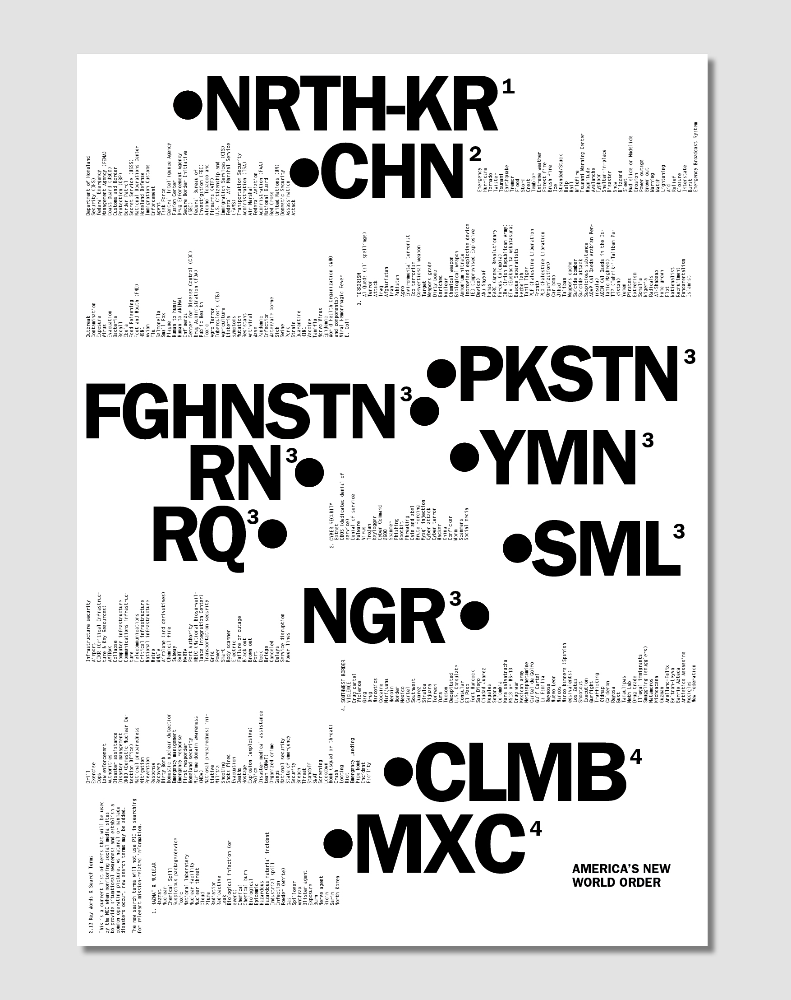
NSA poster
De landen heb ik met een grote dikke letter aangegeven en de lijst staat ertussen in een kleine dunne letter, om contrast te creëren.
ANIMATIE
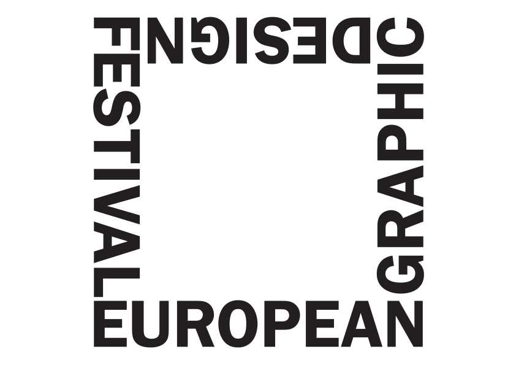
Graphic Design Festival animation
Hiervoor heb ik zo een 10 geanimeerde variaties gemaakt. De vorm die de letters maakt leende zich hier perfect voor.
WERKWIJZE
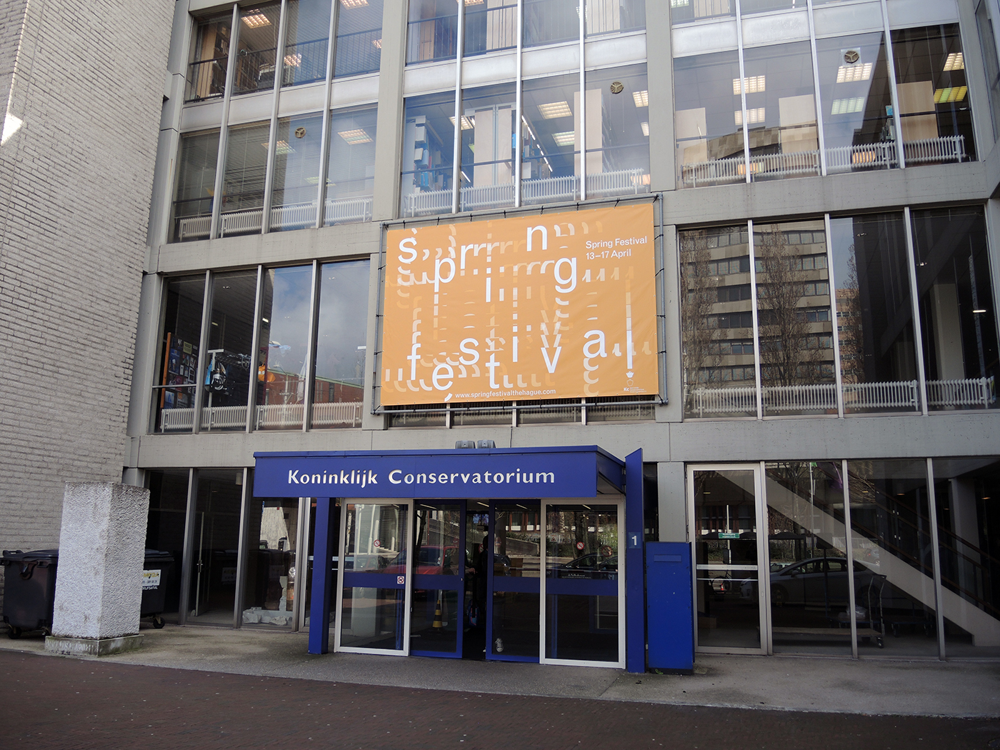
Spring Festival
Voor deze opdracht heb ik geprobeerd de werkwijze van een beroemde Nederlandse componist waar het festival in naam van was na te bootsen.
TRANSFORMATIE
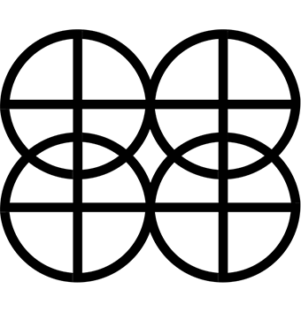
Leiden Lustrum
Een dynamische vorm die alle getallen in zich heeft en door middel van transformatie laat zien
CONCEPT
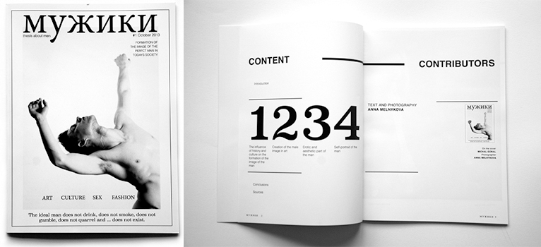
Man Magazine
Ik vind het tof om te werken vanuit een concept, er is dus duidelijk een reden waarom ik dit lettertype gekozen heb.
HANDWRITTEN
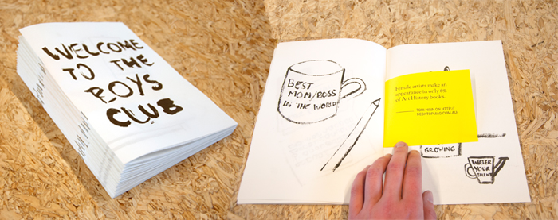
Welcome to the Boys Club publicatie
Dit botste heel goed, de feitelijke typografie en geïllustreerde subjectieve beelden.
COMBINATIE
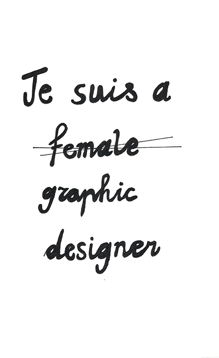
Je suis…
Ik grijp snel naar mijn eigen handschrift, de manier waarop ik met mijn handen sfeer neer kan zetten.
TEKSTBEELD
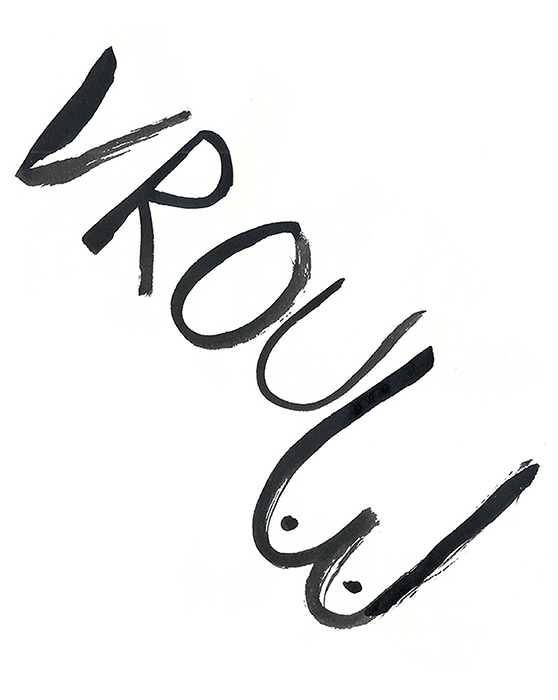
Vrouw
Ik werk vaak met tekst en beeld gecombineerd
SHOKEREND
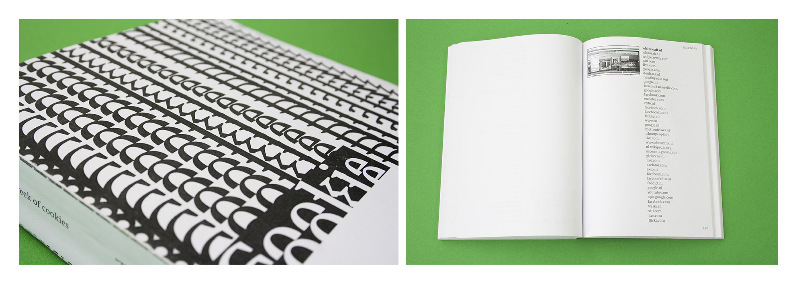
Cookie diary
Ik heb de kijker willen laten shockeren door de hoeveelheid te laten zien en deze extra te benadrukken door het gebruik van een redelijk groot leesfont, een hogere interlinie en het gebruik van maar 1 kolom per pagina. De typografische cover is ontstaat door een crash van mijn indesign tijdens het laden van deze enorme data aan websites
VULLEND
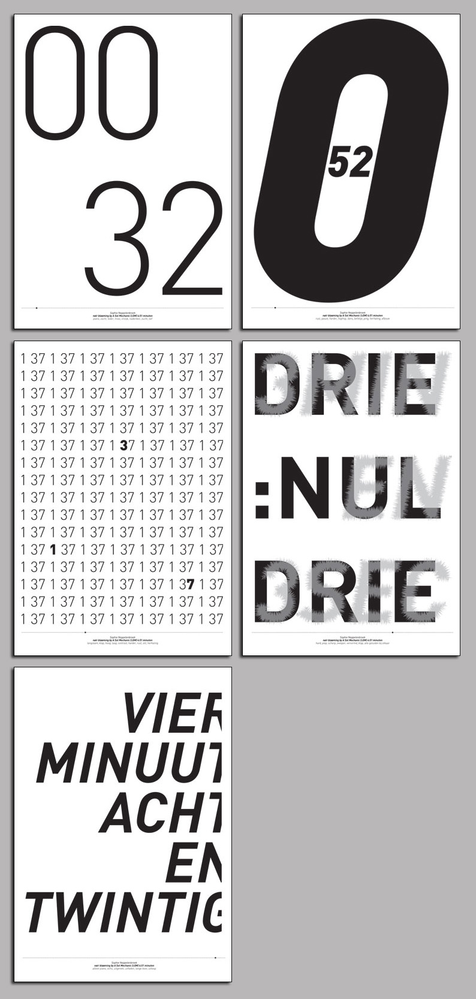
Posterserie
Tijdens het luisteren van het nummer heb ik opgeschreven wat ik voelde, en aan de hand daarvan heb ik het ontwerp gemaakt. Contrast, clean, afloop, etc. Op het gevoel van het nummer heb ik de poster ontworpen. Dit vind ik wel echt leuk om te doen, lekker bold, een hele poster vullen met tekst
UITREKKEN
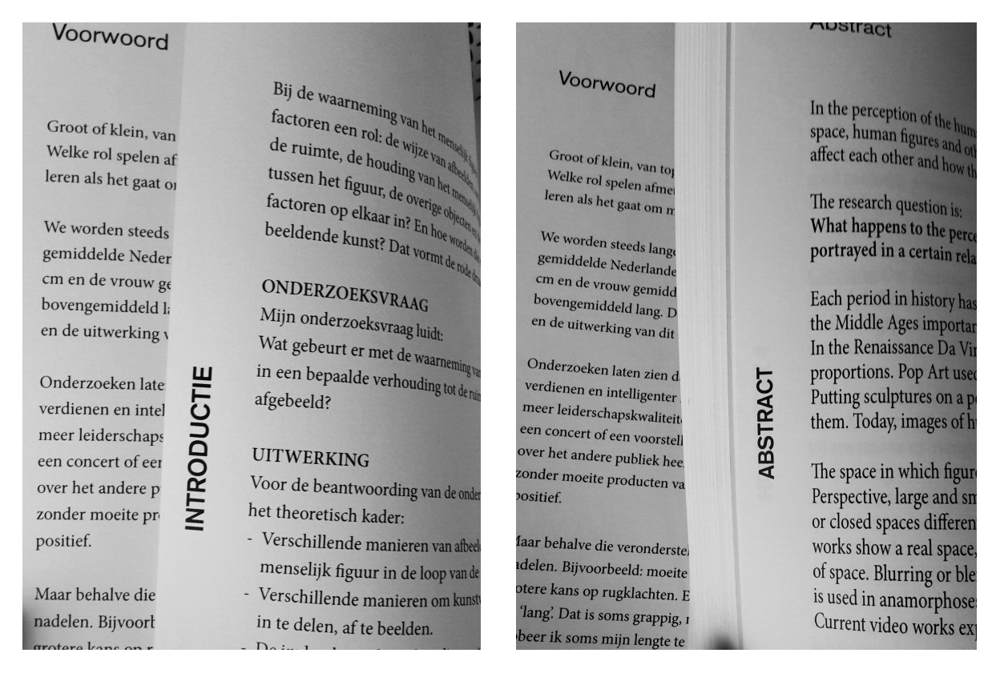
Van top tot teen
De letterhoogte is per pagina met 1% verhoogt. Dit zie je dus niet als je het boek leest, maar wel als je de eerste een laatste pagina naast elkaar legt. In verhouding zie je meer verschillen in afmeting dat wanneer je het los stand ziet
CURSIEF
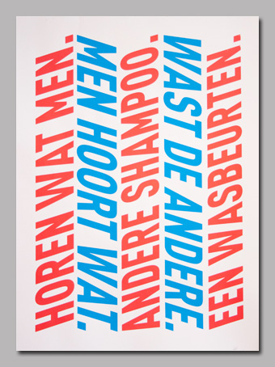
Fortune-cookie Zeefdruk poster
Ik heb de tekst van een fortune-cookie meerdere keren vertaald door google translate. Deze verschillende vertalingen heb ik achter elkaar gezet waardoor er een hele andere zin uitkomt. De letters heb ik extra schuin gezet waardoor je je hoofd ook van links naar rechts schuin moet bewegen om te tekst te kunnen lezen
Alice
Sophie
Jorick